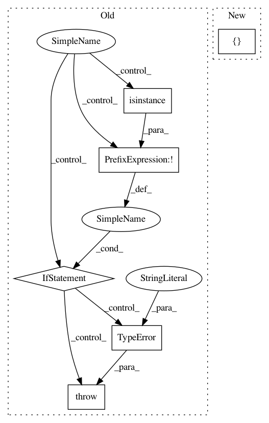

24e7ed3b8f62fd702b2fea624189f93d145ad8b5,theano/gof/fg.py,FunctionGraph,orderings,#FunctionGraph#,643
Before Change
ords = OrderedDict()
if non_empty_ordering > 1:
for node, prereqs in iteritems(orderings):
if not isinstance(prereqs, (list, OrderedSet)):
raise TypeError(
"prereqs must be a type with a "
"deterministic iteration order, or toposort "
" will be non-deterministic.")
ords.setdefault(node, []).extend(prereqs)
if non_empty_ordering > 1:
// eliminate duplicate prereqs if there is more then one
// empty ordering
After Change
assert isinstance(self._features, list)
all_orderings = []
for feature in self._features:
if hasattr(feature, "orderings"):
orderings = feature.orderings(self)
In pattern: SUPERPATTERN
Frequency: 3
Non-data size: 6
Instances
Project Name: Theano/Theano
Commit Name: 24e7ed3b8f62fd702b2fea624189f93d145ad8b5
Time: 2017-05-30
Author: nouiz@nouiz.org
File Name: theano/gof/fg.py
Class Name: FunctionGraph
Method Name: orderings
Project Name: pgmpy/pgmpy
Commit Name: 9c1978125348ab67190995586175a7d6402bf247
Time: 2013-12-31
Author: ankurankan@gmail.com
File Name: src/BayesianModel/BayesianModel.py
Class Name: BayesianModel
Method Name: add_edge
Project Name: scikit-learn-contrib/DESlib
Commit Name: ec396411be11d514a44a18813278f3a41c73ac5f
Time: 2018-09-23
Author: Natlem@users.noreply.github.com
File Name: deslib/dcs/base.py
Class Name: DCS
Method Name: __init__